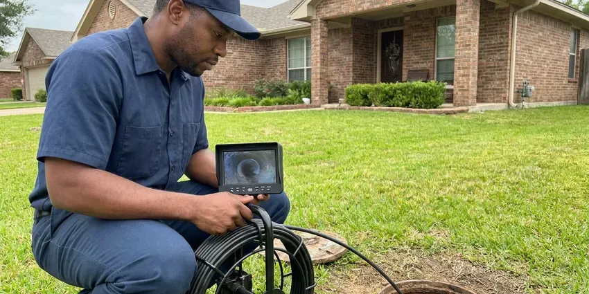

Plumbers Near Me in Rawlins, WY
Our trucks in Rawlins, WY carry Moen, Delta and Kohler parts along with common water heater parts, so the fix usually happens on the first trip.
- Same Day Appointments
- Real Arrival Times
- Floors Covered on Every Job
- 24 Hour Emergency Line
Leaks, Clogs, No Hot Water in Rawlins, WY?
After hours, someone still answers. Burst pipes do not keep business hours.
Your Neighborhood Plumbers in Rawlins, WY
Our plumbers in Rawlins, WY start every call by finding the actual cause. Not every leak is where it looks. A wet ceiling might be a shower valve, a wax ring or a supply line two rooms away, so we trace it before we quote anything. Then you get a written price.
Some of what we do:
- Tank and high-efficiency water heater installs
- Pressure regulator and main valve replacement
- Drain clearing and sewer line cleaning

Additional Plumbing Maintenance Services in Rawlins, WY
Our maintenance and specialty plumbing services in Rawlins, WY protect your home year-round and extend the life of every system.


Customers
Why Choose JKV Plumbing for Plumbers Near Me in Rawlins, WY?
A water softener or filtration system is a popular upgrade for Wyoming homeowners dealing with scale and staining. Expansive clay soils are common in parts of Wyoming, and their swelling and shrinking can crack foundations and shift buried pipes. Our plumbers work with those conditions every day and use parts that hold up to them.
- Work Guaranteed, Repairs carry a workmanship guarantee in writing.
- Stocked Trucks, Common parts ride on every truck, so most repairs finish in one visit.
- Written Pricing, You approve a written price before work begins, with no hidden fees.
Citywide Coverage
Our crews cover Rawlins, WY and the towns around it. Same trucks, same plumbers. From the middle of town to the outer edges, we can usually be there today, with emergencies first.
Experienced Team
Our plumbers hold Wyoming licenses and have seen just about every plumbing problem a house can have. Very little surprises them. That experience shows in the diagnosis, since a plumber who has replaced hundreds of water heaters can tell a bad thermocouple from a dead tank in a few minutes.
Safety-First Approach
Every repair gets tested before we leave. Testing is part of the job. Supply lines are pressurized and checked for drips, drains are flow tested and gas appliances are checked.
Trusted Certified Rawlins Plumbing Services Professionals
At JKV Plumbing, we are proud to offer certified plumbing services throughout Rawlins, WY. Credentials matter in this trade. Every repair, install and maintenance visit follows strict safety and quality rules, and the plumbers doing the work carry recognized industry credentials.
Call Us Now PHCC Plumbing Contractor Recognition
PHCC Plumbing Contractor Recognition Better Business Bureau (BBB) Accreditation
Better Business Bureau (BBB) Accreditation Angi Certified Pro
Angi Certified Pro ISO 9001 Quality Management Certification
ISO 9001 Quality Management CertificationWhat Our Plumbers Take Care Of in Rawlins, WY
Slab Leak Detection & Repair in Rawlins, WY
Expansive clay soils are common in parts of Wyoming, and their swelling and shrinking can crack foundations and shift buried pipes. A slab leak is a supply pipe leaking under the concrete floor. A warm floor tile is a giveaway. We find it with acoustic gear and a thermal camera, then you choose between opening the slab at that spot, rerouting the line through the walls or attic, or abandoning the old pipe and repiping overhead. Each has its tradeoffs.

Commercial Plumbing Services in Rawlins, WY
Commercial plumbing is mostly about keeping things running. Maintenance beats emergencies. JKV Plumbing services grease traps, backflow assemblies, water heaters and restrooms, often on a set schedule for businesses across Rawlins, WY. We work around your hours.
Emergency Plumbing Services in Rawlins
A burst supply line can put several gallons a minute on the floor. Shut the main first. JKV Plumbing answers emergency calls around the clock in Rawlins, and the plumber who shows up carries the fittings, valves and pipe to make a permanent repair rather than a temporary patch. Speed limits the damage.
Water Heater Services in Rawlins
Tank water heaters last about 8 to 12 years. Sediment shortens that. We flush tanks, swap anode rods and elements, and install new units sized right in Rawlins. A rumbling tank is full of sediment.
Leak Detection and Pipe Repair in Rawlins
Pinhole leaks in older copper lines are common. They start small. We find hidden leaks with acoustic gear, a thermal camera and pressure tests, then repair the section. Drywall openings stay small.
Fixture Installation & Repair in Rawlins
Faucets, sinks, showers, tubs and disposals all wear out. Cartridges go first. Our plumbers repair or replace them, working with Moen, Delta, Kohler, American Standard and the other major brands so parts are easy to find later for your Rawlins home. Bring your own fixture if you like.
Sewer Line Repair & Replacement in Rawlins, WY
Sewer lines fail from roots, age and ground movement. Expansive clay soils are common in parts of Wyoming, and their swelling and shrinking can crack foundations and shift buried pipes. Cracks and sags follow. After a camera inspection, we price the options, from a single dig to fix one bad section to trenchless lining or pipe bursting that replaces the whole lateral without a long trench. You see the footage first.

Drain Cleaning and Sewer Service in Rawlins, WY
Slow sinks, tubs and toilets are some of our most common calls. Usually it is an easy fix. We use cables and jetters sized to the pipe, then run water to confirm full flow, and for whole-house backups we scope the main sewer line with a camera before deciding on any repair. We tell you what caused it.
Why a Nearby Plumber Matters in Rawlins, WY
Close by also means we come back. Follow-ups are easy. If something we fixed needs another look, we come back and make it right, because we work in Rawlins every day.
Our plumbers work Rawlins every day and know the local housing stock. That speeds things up. Older neighborhoods tend to have galvanized pipe and worn gate valves, while newer subdivisions are plumbed in PEX with manifolds, and knowing which you have tells us what to bring.
JKV Plumbing at a Glance
- Licensed and insured plumbers serving Rawlins, WY
- 24/7 emergency service with same-day scheduling
- Upfront, flat-rate pricing before work begins
- 4.9-star rated by 782+ Wyoming customers
Rawlins Map
Rawlins Information
- Population
- 8,032
- Area codes
- Local
- Service area
- Rawlins and communities within 40 miles
- Nearby
- Casper, Laramie, Rock Springs, Riverton
High elevation and strong winds make cold snaps harsher, pulling heat from exterior walls and exposed pipes. Water quality and foundation type add their own strain in Rawlins, WY, which is why local experience shortens the diagnosis.
Talk to a Plumber
Reach out to JKV Plumbing for honest, reliable plumbing from people who know the trade in Rawlins, WY.
Our Specialized Plumbing Services in Rawlins, WY
At JKV Plumbing, you get every kind of plumbing service from one company across Rawlins, WY. We go from leak detection all the way to full system installations, for homes and commercial buildings, and we do it quickly at a fair price. Explore our core services below:


How a Plumbing Visit Goes in Rawlins, WY
A plumbing call in Rawlins is simple: find it, price it, fix it.
Book a Visit
Call (307) 393-4049 to describe the problem. Same-day slots are usually open.
On-Site Look
A JKV Plumbing plumber arrives on time at your Rawlins property and inspects the problem.
Clear Pricing
We give you a written estimate. Approve it and we start.
Frequently Asked Questions About Plumbers Near Me in Rawlins
Minor repairs usually run $150 to $300. Big jobs cost more. A water heater replacement, a sewer line repair or a repipe can range from $800 to several thousand dollars depending on the size of the job, access and materials. You get a written estimate after we look at the problem.
Yes, most days. Call early for the best chance. Emergency service is available around the clock for urgent problems, like burst pipes, sewage backups or a water heater leaking across the garage floor. We give you an honest arrival window.
A water softener or filtration system is a common upgrade for Wyoming homeowners dealing with scale and staining. Scale builds on faucets, showerheads and inside water heaters and pipes. Flow drops over time. It also shortens the life of cartridges, dishwashers, washing machines and the heating elements in electric water heaters, which burn out faster under a layer of scale. A water softener helps protect all of it.
Simple tasks, yes. Most people can swap a flapper. Gas lines, water heaters, sewer lines and anything inside walls belong with a licensed plumber, because mistakes there lead to leaks, code violations or real safety hazards. We are happy to tell you which is which.
Hard water carries dissolved calcium and magnesium. Soft water has had it removed. A water softener or filtration system is a popular upgrade for Wyoming homeowners dealing with scale and staining. Hard water leaves scale in pipes and water heaters, makes soap lather poorly and leaves spots on glass and fixtures that are hard to scrub off. We can test your water in Rawlins.
Minor clogs and drips are fine to try. Stop if it gets complicated. Gas lines, water heaters and anything structural carry real safety risks, and a wrong repair can turn a small leak into a flooded room or a code problem when you sell the house. A professional diagnoses and fixes it correctly.
Our emergency line runs 24 hours. Someone always answers. In Rawlins we usually have a plumber on site within a few hours, often sooner, carrying the parts to stop the water and start the repair right away. The fastest response comes from calling (307) 393-4049 directly.
We install all the major brands. Moen and Delta lead the list. Kohler and American Standard fixtures are regulars too, with Rheem, AO Smith, Bradford White and Navien for heaters. We can recommend a model.
What People Are Saying About Our Plumbing Experts?

Megan L.
Our upstairs tub drained so slowly that every shower turned into a bath. JKV Plumbing pulled a wad of hair out of the stopper and then snaked the line past the trap. Three months later it still drains fast.
Drain Cleaning · Lander, WY
Nathan E.
Our tankless heater kept throwing an error code and shutting off mid shower. The tech flushed the heat exchanger, which was full of scale, and replaced a bad flow sensor. Hot water has been steady for half a year now.
Water Heater Repair · Laramie, WY
Monica A.
Our water bill nearly doubled in one month with no change in how we used water. The tech checked the meter, heard the leak under the hallway with his equipment, and opened a hole about a foot square. Fixed the same day.
Slab Leak Repair · Rock Springs, WY
Patricia H.
We had a slab leak that two other companies could not find. JKV Plumbing located it in under an hour with a listening device. They rerouted the line through the attic instead of breaking up the floor, so we kept our kitchen tile.
Slab Leak Repair · Rock Springs, WYKaren W.
After our third pinhole leak in copper, we stopped patching. JKV Plumbing gave us a written plan room by room and repiped the house in PEX while we stayed in it. The crew covered our floors every morning and cleaned up every night.
Repiping · Riverton, WY
James P.
Our restaurant had a slow leak at the hand sink that was rotting the cabinet base. JKV Plumbing came in at six in the morning before prep, replaced the trap and both supply lines, and was packed up before my first cook clocked in.
Commercial Plumbing · Rawlins, WY